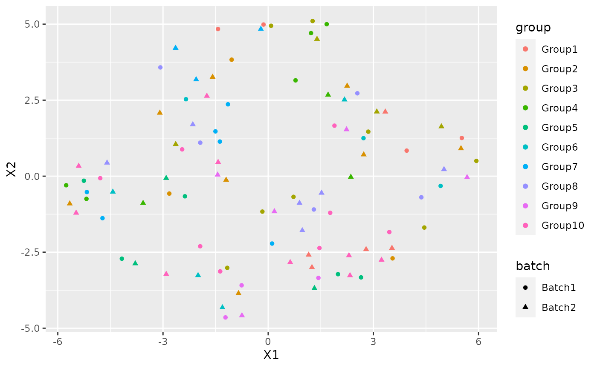

#> Loading required package: SingleCellExperiment
#> Loading required package: SummarizedExperiment
#> Loading required package: GenomicRanges
#> Loading required package: stats4
#> Loading required package: BiocGenerics
#> Loading required package: parallel
#>
#> Attaching package: 'BiocGenerics'
#> The following objects are masked from 'package:parallel':
#>
#> clusterApply, clusterApplyLB, clusterCall, clusterEvalQ,
#> clusterExport, clusterMap, parApply, parCapply, parLapply,
#> parLapplyLB, parRapply, parSapply, parSapplyLB
#> The following objects are masked from 'package:stats':
#>
#> IQR, mad, sd, var, xtabs
#> The following objects are masked from 'package:base':
#>
#> anyDuplicated, append, as.data.frame, basename, cbind, colnames,
#> dirname, do.call, duplicated, eval, evalq, Filter, Find, get, grep,
#> grepl, intersect, is.unsorted, lapply, Map, mapply, match, mget,
#> order, paste, pmax, pmax.int, pmin, pmin.int, Position, rank,
#> rbind, Reduce, rownames, sapply, setdiff, sort, table, tapply,
#> union, unique, unsplit, which.max, which.min
#> Loading required package: S4Vectors
#>
#> Attaching package: 'S4Vectors'
#> The following object is masked from 'package:base':
#>
#> expand.grid
#> Loading required package: IRanges
#> Loading required package: GenomeInfoDb
#> Loading required package: Biobase
#> Welcome to Bioconductor
#>
#> Vignettes contain introductory material; view with
#> 'browseVignettes()'. To cite Bioconductor, see
#> 'citation("Biobase")', and for packages 'citation("pkgname")'.
#> Loading required package: DelayedArray
#> Loading required package: Matrix
#>
#> Attaching package: 'Matrix'
#> The following object is masked from 'package:S4Vectors':
#>
#> expand
#> Loading required package: matrixStats
#>
#> Attaching package: 'matrixStats'
#> The following objects are masked from 'package:Biobase':
#>
#> anyMissing, rowMedians
#>
#> Attaching package: 'DelayedArray'
#> The following objects are masked from 'package:matrixStats':
#>
#> colMaxs, colMins, colRanges, rowMaxs, rowMins, rowRanges
#> The following objects are masked from 'package:base':
#>
#> aperm, apply, rowsum
#> Loading required package: SharedObject
#> Package 'mclust' version 5.4.6
#> Type 'citation("mclust")' for citing this R package in publications.I am going to show how to use NewWave with example data. To do this I am going to generate some data using splatter.
params <- newSplatParams() N=100 set.seed(1234) data <- splatSimulateGroups(params,batchCells=c(N/2,N/2), group.prob = rep(0.1,10), de.prob = 0.2, verbose = FALSE)
Now we have a dataset with 1000 cells and 10000 genes, I will use only 1000. NewWave takes as input raw data, not normalized.
set.seed(12359) data <- data[-which(rowSums(counts(data))==0),] data <- data[sample(1:nrow(data),100),]
As you can see there is a variable called batch in the colData section.
colData(data) #> DataFrame with 100 rows and 4 columns #> Cell Batch Group ExpLibSize #> <character> <character> <factor> <numeric> #> Cell1 Cell1 Batch1 Group5 58712.6 #> Cell2 Cell2 Batch1 Group3 64590.8 #> Cell3 Cell3 Batch1 Group4 55313.5 #> Cell4 Cell4 Batch1 Group10 58176.6 #> Cell5 Cell5 Batch1 Group10 71649.7 #> ... ... ... ... ... #> Cell96 Cell96 Batch2 Group1 66341.2 #> Cell97 Cell97 Batch2 Group9 45592.4 #> Cell98 Cell98 Batch2 Group6 69882.6 #> Cell99 Cell99 Batch2 Group5 63741.6 #> Cell100 Cell100 Batch2 Group3 68475.9
IMPORTANT: For batch effecr removal the batch variable must be a factor
data$Batch <- as.factor(data$Batch)
We also have a variable called Group that represent the cell type labels.
We can see the how the cells are distributed between group and batch
pca <- prcomp_irlba(t(counts(data)),n=10) plot_data <-data.frame(Rtsne(pca$x)$Y)
plot_data$batch <- data$Batch plot_data$group <- data$Group
ggplot(plot_data, aes(x=X1,y=X2,col=group, shape=batch))+ geom_point()

There is a clear batch effect between the cells.
Let’s try to correct it.
NewWave
The default options use 1 core and no mini-batch approaches, it don’t use the verbose option but I set it TRUE for example purpose(not suggested with big dataset). The default number of latent variables is 2.
res <- newWave(data,X = "~Batch", K=2, verbose = TRUE) #> Time of setup #> user system elapsed #> 0.015 0.004 0.277 #> Time of initialization #> user system elapsed #> 0.004 0.000 0.173 #> Iteration 1 #> penalized log-likelihood = -18570.1529381275 #> Time of dispersion optimization #> user system elapsed #> 0.051 0.028 0.043 #> after optimize dispersion = -18443.9525399498 #> Time of right optimization #> user system elapsed #> 0.025 0.028 0.324 #> after right optimization= -16861.6789105516 #> after orthogonalization = -16854.1777580081 #> Time of left optimization #> user system elapsed #> 0.001 0.000 0.210 #> after left optimization= -16771.1956784184 #> after orthogonalization = -16770.7527542158 #> Iteration 2 #> penalized log-likelihood = -16770.7527542158 #> Time of dispersion optimization #> user system elapsed #> 0.040 0.004 0.044 #> after optimize dispersion = -16619.9062269913 #> Time of right optimization #> user system elapsed #> 0.000 0.000 0.251 #> after right optimization= -16583.65446812 #> after orthogonalization = -16582.1055639265 #> Time of left optimization #> user system elapsed #> 0.001 0.000 0.213 #> after left optimization= -16567.6922650513 #> after orthogonalization = -16567.6701980266 #> Iteration 3 #> penalized log-likelihood = -16567.6701980266 #> Time of dispersion optimization #> user system elapsed #> 0.055 0.000 0.055 #> after optimize dispersion = -16567.407359959 #> Time of right optimization #> user system elapsed #> 0.00 0.00 0.23 #> after right optimization= -16558.9784472967 #> after orthogonalization = -16558.7669677177 #> Time of left optimization #> user system elapsed #> 0.000 0.000 0.193 #> after left optimization= -16553.8015513382 #> after orthogonalization = -16553.7985226764 #> Iteration 4 #> penalized log-likelihood = -16553.7985226764 #> Time of dispersion optimization #> user system elapsed #> 0.038 0.000 0.038 #> after optimize dispersion = -16553.794742891 #> Time of right optimization #> user system elapsed #> 0.001 0.000 0.215 #> after right optimization= -16550.3085761362 #> after orthogonalization = -16550.2578695055 #> Time of left optimization #> user system elapsed #> 0.001 0.000 0.194 #> after left optimization= -16547.8857787824 #> after orthogonalization = -16547.8851082194 #> Iteration 5 #> penalized log-likelihood = -16547.8851082194 #> Time of dispersion optimization #> user system elapsed #> 0.041 0.000 0.041 #> after optimize dispersion = -16547.8849889648 #> Time of right optimization #> user system elapsed #> 0.000 0.000 0.229 #> after right optimization= -16546.1039198938 #> after orthogonalization = -16546.0894248128 #> Time of left optimization #> user system elapsed #> 0.000 0.000 0.197 #> after left optimization= -16544.7550308269 #> after orthogonalization = -16544.7548556691 #> Iteration 6 #> penalized log-likelihood = -16544.7548556691 #> Time of dispersion optimization #> user system elapsed #> 0.04 0.00 0.04 #> after optimize dispersion = -16544.7548556798 #> Time of right optimization #> user system elapsed #> 0.000 0.000 0.223 #> after right optimization= -16543.6785768866 #> after orthogonalization = -16543.6735940206 #> Time of left optimization #> user system elapsed #> 0.000 0.000 0.201 #> after left optimization= -16542.801033715 #> after orthogonalization = -16542.8009857729 #> Iteration 7 #> penalized log-likelihood = -16542.8009857729 #> Time of dispersion optimization #> user system elapsed #> 0.040 0.000 0.039 #> after optimize dispersion = -16542.8009799843 #> Time of right optimization #> user system elapsed #> 0.001 0.000 0.237 #> after right optimization= -16542.0622145142 #> after orthogonalization = -16542.0600448754 #> Time of left optimization #> user system elapsed #> 0.001 0.000 0.197 #> after left optimization= -16541.4299168765 #> after orthogonalization = -16541.4299052948
In order to make it faster you can increase the number of cores using “children” parameter:
res2 <- newWave(data,X = "~Batch", K=2, verbose = TRUE, children=2) #> Time of setup #> user system elapsed #> 0.013 0.004 0.305 #> Time of initialization #> user system elapsed #> 0.004 0.000 0.179 #> Iteration 1 #> penalized log-likelihood = -18570.1529655536 #> Time of dispersion optimization #> user system elapsed #> 0.045 0.034 0.040 #> after optimize dispersion = -18443.9525017686 #> Time of right optimization #> user system elapsed #> 0.028 0.016 0.258 #> after right optimization= -16861.6793893642 #> after orthogonalization = -16854.1783018151 #> Time of left optimization #> user system elapsed #> 0.001 0.000 0.130 #> after left optimization= -16771.1962159577 #> after orthogonalization = -16770.753290859 #> Iteration 2 #> penalized log-likelihood = -16770.753290859 #> Time of dispersion optimization #> user system elapsed #> 0.042 0.000 0.042 #> after optimize dispersion = -16619.9067890788 #> Time of right optimization #> user system elapsed #> 0.000 0.000 0.135 #> after right optimization= -16583.6549732946 #> after orthogonalization = -16582.1060709067 #> Time of left optimization #> user system elapsed #> 0.00 0.00 0.11 #> after left optimization= -16567.692671621 #> after orthogonalization = -16567.6706044715 #> Iteration 3 #> penalized log-likelihood = -16567.6706044715 #> Time of dispersion optimization #> user system elapsed #> 0.039 0.000 0.038 #> after optimize dispersion = -16567.407767981 #> Time of right optimization #> user system elapsed #> 0.000 0.000 0.117 #> after right optimization= -16558.9787761676 #> after orthogonalization = -16558.7672959891 #> Time of left optimization #> user system elapsed #> 0.001 0.000 0.106 #> after left optimization= -16553.8018215432 #> after orthogonalization = -16553.7987927986 #> Iteration 4 #> penalized log-likelihood = -16553.7987927986 #> Time of dispersion optimization #> user system elapsed #> 0.041 0.000 0.041 #> after optimize dispersion = -16553.7950131194 #> Time of right optimization #> user system elapsed #> 0.000 0.000 0.119 #> after right optimization= -16550.308799643 #> after orthogonalization = -16550.2580927825 #> Time of left optimization #> user system elapsed #> 0.000 0.000 0.107 #> after left optimization= -16547.8859558962 #> after orthogonalization = -16547.8852852981 #> Iteration 5 #> penalized log-likelihood = -16547.8852852981 #> Time of dispersion optimization #> user system elapsed #> 0.037 0.000 0.036 #> after optimize dispersion = -16547.8851660793 #> Time of right optimization #> user system elapsed #> 0.001 0.000 0.127 #> after right optimization= -16546.1040571639 #> after orthogonalization = -16546.0895618486 #> Time of left optimization #> user system elapsed #> 0.001 0.000 0.099 #> after left optimization= -16544.7551282118 #> after orthogonalization = -16544.754953042 #> Iteration 6 #> penalized log-likelihood = -16544.754953042 #> Time of dispersion optimization #> user system elapsed #> 0.038 0.000 0.037 #> after optimize dispersion = -16544.7549530536 #> Time of right optimization #> user system elapsed #> 0.001 0.000 0.114 #> after right optimization= -16543.6786322878 #> after orthogonalization = -16543.6736492614 #> Time of left optimization #> user system elapsed #> 0.000 0.000 0.098 #> after left optimization= -16542.8010461738 #> after orthogonalization = -16542.8009982204 #> Iteration 7 #> penalized log-likelihood = -16542.8009982204 #> Time of dispersion optimization #> user system elapsed #> 0.039 0.000 0.038 #> after optimize dispersion = -16542.8009924221 #> Time of right optimization #> user system elapsed #> 0.000 0.000 0.131 #> after right optimization= -16542.0621823315 #> after orthogonalization = -16542.0600125396 #> Time of left optimization #> user system elapsed #> 0.000 0.000 0.102 #> after left optimization= -16541.4298389943 #> after orthogonalization = -16541.4298274082
Or use some mini-batch approaches: - n_gene_disp : Number of genes to use in the dispersion optimization - n_cell_par : Number of cells to use in the cells related parameters optimization - n_gene_par : Number of genes to use in the genes related parameters optimization
res3 <- newWave(data,X = "~Batch", verbose = TRUE,K=2, children=2, n_gene_disp=100, n_gene_par = 100, n_cell_par = 100, commondispersion = FALSE) #> Time of setup #> user system elapsed #> 0.012 0.004 0.292 #> Time of initialization #> user system elapsed #> 0.004 0.000 0.174 #> Iteration 1 #> penalized log-likelihood = -18570.1529852823 #> Time of dispersion optimization #> user system elapsed #> 0.041 0.027 0.034 #> after optimize dispersion = -18443.9526045906 #> Time of right optimization #> user system elapsed #> 0.013 0.016 0.270 #> after right optimization= -16861.6790184451 #> after orthogonalization = -16854.1778653567 #> Time of left optimization #> user system elapsed #> 0.000 0.000 0.121 #> after left optimization= -16771.1957685484 #> after orthogonalization = -16770.7528442775 #> Iteration 2 #> penalized log-likelihood = -16770.7528442775 #> Time of dispersion optimization #> user system elapsed #> 0.004 0.000 0.073 #> after optimize dispersion = -16412.8774918674 #> Time of right optimization #> user system elapsed #> 0.000 0.000 0.128 #> after right optimization= -16387.8857664975 #> after orthogonalization = -16387.7974871449 #> Time of left optimization #> user system elapsed #> 0.000 0.000 0.114 #> after left optimization= -16322.4303586552 #> after orthogonalization = -16322.3964345851 #> Iteration 3 #> penalized log-likelihood = -16322.3964345851 #> Time of dispersion optimization #> user system elapsed #> 0.003 0.000 0.028 #> after optimize dispersion = -16322.3933157962 #> Time of right optimization #> user system elapsed #> 0.001 0.000 0.115 #> after right optimization= -16314.3356179081 #> after orthogonalization = -16314.2235445531 #> Time of left optimization #> user system elapsed #> 0.000 0.000 0.101 #> after left optimization= -16310.3448302207 #> after orthogonalization = -16310.3447016923 #> Iteration 4 #> penalized log-likelihood = -16310.3447016923 #> Time of dispersion optimization #> user system elapsed #> 0.004 0.000 0.018 #> after optimize dispersion = -16310.3456317136 #> Time of right optimization #> user system elapsed #> 0.001 0.000 0.115 #> after right optimization= -16307.9918724763 #> after orthogonalization = -16307.9625841157 #> Time of left optimization #> user system elapsed #> 0.001 0.000 0.096 #> after left optimization= -16306.4981000363 #> after orthogonalization = -16306.498001678 #> Iteration 5 #> penalized log-likelihood = -16306.498001678 #> Time of dispersion optimization #> user system elapsed #> 0.003 0.000 0.022 #> after optimize dispersion = -16306.496488459 #> Time of right optimization #> user system elapsed #> 0.001 0.000 0.108 #> after right optimization= -16305.4878439958 #> after orthogonalization = -16305.4798672616 #> Time of left optimization #> user system elapsed #> 0.001 0.000 0.102 #> after left optimization= -16304.7805195322 #> after orthogonalization = -16304.7803568253 #> Iteration 6 #> penalized log-likelihood = -16304.7803568253 #> Time of dispersion optimization #> user system elapsed #> 0.003 0.000 0.018 #> after optimize dispersion = -16304.7810641999 #> Time of right optimization #> user system elapsed #> 0.00 0.00 0.11 #> after right optimization= -16304.2625126219 #> after orthogonalization = -16304.2599759294 #> Time of left optimization #> user system elapsed #> 0.000 0.000 0.097 #> after left optimization= -16303.8724720537 #> after orthogonalization = -16303.8722954994
Now I can use the latent dimension rapresentation for visualization purpose:
latent <- reducedDim(res) tsne_latent <- data.frame(Rtsne(latent)$Y) tsne_latent$batch <- data$Batch tsne_latent$group <- data$Group
ggplot(tsne_latent, aes(x=X1,y=X2,col=group, shape=batch))+ geom_point()

or for clustering:
cluster <- kmeans(latent, 10) adjustedRandIndex(cluster$cluster, data$Group) #> [1] 0.02257236